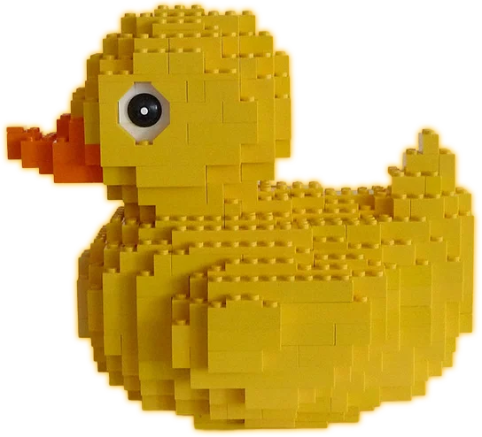
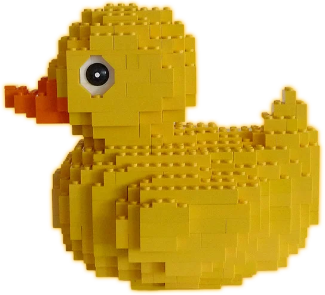

I de tidligere dagene til Lego, før selskapet het Lego, ble Ole Kirk og familien hans hard rammet av den store depresjonen. Danmark ble spesielt hard rammet innenfor landbruk, og bønder var de kundene som Ole Kirk hadde hatt i mange år som ikke lenger hadde penger til å kjøpe mæbøer og utstyr av han.
Ole kirk tok derfor for seg å lage mindre ting med treverket han hadde som blant annet ble leker, og den velkjente anden som i dag er nok sett på som en av de første leketøys prosjektene til Ole kirk.